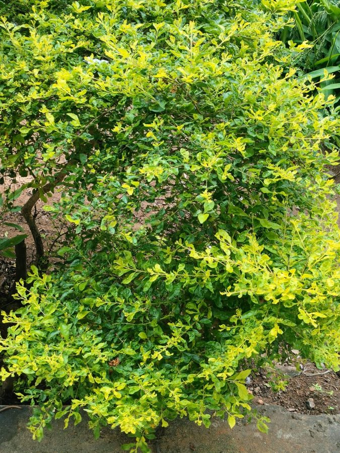

नीलकांताGolden Dewdrop
Duranta erecta · Verbenaceae · FLR-0311

- Scientific name वैज्ञानिक नाम
- Duranta erecta L.
- Family कुल
- Verbenaceae
- Hindi हिंदी
- नीलकांता
- Local names स्थानीय नाम
- nilkanta, duranta, golden dewdrop
- Status here यहाँ की स्थिति
- naturalized
- Movement आवागमन
- Resident, here all year
- Known from कहाँ दर्ज
- Others have published records from the Basti–Ayodhya districts बस्ती–अयोध्या के ज़िलों से दूसरों के प्रकाशित अभिलेख
- IUCN IUCN
- not evaluated
- Review समीक्षा
- audited and independently read
When to look कब देखें
Present all year. साल भर मौजूद।
Uses and possibilities उपयोग और संभावनाएँ
Drawn from the documented uses in the profile below, where each is labelled traditional, current or a research lead. All uses →
Tell it apart from इनसे अलग पहचानें
नीलकांता / Golden Dewdrop
Duranta erecta L. — Verbenaceae
नीलकांता — बागों से निकलकर खेतों के किनारे, सड़कों के साथ-साथ, और सड़ी-गली जगहों में उग आने वाली झाड़ी। पत्तियाँ पतली, सरल। फूल छोटे, बैंगनी या नीले, बहुत सुंदर। फूलों के बाद सुनहरी, मणियों जैसी फलियाँ आती हैं, जिन्हें पक्षी खाते हैं। पूरा पौधा थोड़ा जहरीला है, ख़ासकर फलें। पर बागों में इसकी सुंदरता के लिए लगाया जाता है। कहीं-कहीं अपने आप उगने लगा है।
Quick Identification त्वरित पहचान
| Feature | Description |
|---|---|
| Size | Semi-deciduous shrub 1–2.5 m tall, erect, much-branched, often somewhat thorny |
| Leaves | Simple, opposite, oblong-lanceolate, 3–8 cm long, light green, entire or finely serrated |
| Flowers | Small, delicate, 0.5–1 cm, purple, blue, or lilac, in drooping spikes; highly fragrant |
| Fruit | Round drupe, 0.8–1 cm, bright golden-yellow when ripe; contains one seed; highly attractive to birds |
| The test | Purple or blue flowers in drooping spikes; bright golden-yellow berries; light green simple leaves |
Field tip: Golden Dewdrop is increasingly common in wastelands and field margins in eastern UP. Look for the small, light green opposite leaves, delicate purple-blue flowers borne in drooping clusters, and the distinctive bright golden-yellow berries. The plant is often planted in gardens; it also naturalizes.
हिंदी — कैसे पहचानें: छोटी, नीली-बैंगनी फूलें, लटकती हुई। सुनहरी गोल फलियाँ। पत्तियाँ छोटी, सामने-सामने, हल्की हरी। कहीं कांटे।
Morphology आकारिकी
Biometrics (plants in disturbed sites):
| Measurement | Range |
|---|---|
| Height | 1–2.5 m |
| Leaf length | 3–8 cm |
| Leaf width | 1–3 cm |
| Flower diameter | 0.5–1 cm |
| Fruit diameter | 0.8–1 cm |
Root system: Fibrous; moderately deep; capable of growing in poor soils.
Stem and branches: Erect, much-branched, green when young, becoming woody. Sometimes slightly thorny or prickly on young stems.
Leaves: Simple, opposite, oblong-lanceolate, 3–8 cm long, 1–3 cm wide, light green, entire or finely serrated, hairless or nearly so.
Flowers: Small, delicate, 0.5–1 cm diameter, purple, blue, or lilac (occasionally white in some cultivars). Borne in drooping, slender spikes (racemes) 5–10 cm long. Lightly fragrant.
Fruit: A round drupe (berry), 0.8–1 cm in diameter, green initially, turning bright golden-yellow or orange when ripe. The fruit is attractive and highly palatable to birds. Each fruit contains a single stone-like seed.
Toxins: The fruits and possibly other parts contain saponins and other compounds. The fruits are mildly toxic if ingested in quantity; birds seem to tolerate them better than humans.
हिंदी: पत्तियाँ सामने-सामने, सरल, पतली, हल्की हरी। फूल नीले, बैंगनी, लटकती हुई कलियों में। फल सुनहरी, छोटी, गोल।
Behaviour & Ecology व्यवहार और पारिस्थितिकी
Golden Dewdrop is a tropical shrub, native to Central and South America, cultivated widely as an ornamental and now naturalized in warm regions worldwide. In eastern UP it is grown as an ornamental in gardens and has escaped to wastelands, field margins, and disturbed areas. The plant is hardy, drought-tolerant once established, and grows rapidly. The flowers are visited by bees and other insects. The bright fruits are attractive to birds, which disperse the seeds, leading to naturalization. The plant is now becoming semi-invasive in some areas but is not yet causing major ecological problems.
हिंदी: अमेरिका का पौधा। बागों में लगाया गया, अब अपने आप उगता है। सूखा सहन करता है। बहुत बीज देता है।
Life Cycle / Phenology जीवन चक्र
| Month / season | Event |
|---|---|
| April–May | New growth; early flowers |
| June–September | Peak flowering period in eastern UP |
| August–November | Fruit ripening; bright golden berries attract birds |
| September–December | Peak seed dispersal by birds |
| December–March | Reduced growth; some leaf loss in very cold winters |
| 1–2 years from seed | First flowering |
The plant is semi-deciduous and may lose some leaves in a cool winter.
हिंदी: अप्रैल-मई में फूल। जुलाई-सितंबर में सबसे अधिक फूल। अगस्त-नवंबर में फल। पक्षियों से बीज फैलता है।
Associated Species / Interactions संबंधित प्रजातियाँ
- Pollinators: Bees and other insects visit the flowers.
- Seed dispersal: Birds eagerly consume the golden berries and disperse the seeds.
Pests and Diseases कीट और रोग
- Leaf-eating beetles and caterpillars; rarely serious.
- Scale insects on stems.
- Powdery mildew in humid weather.
- No major fungal diseases in eastern UP.
Agricultural / Human Relevance कृषि प्रासंगिकता
Ornamental use (documented):
Golden Dewdrop is cultivated as an ornamental shrub for its delicate purple flowers and attractive golden berries. The plant is easy to grow and responds well to pruning.
Toxicity (documented):
The fruits are mildly toxic to humans. Ingestion of the berries in large quantities can cause gastrointestinal distress. Birds tolerate the berries well and seem to have enzymes to detoxify the saponins. The berries are not eaten by humans and should not be.
Today. Golden Dewdrop is grown in gardens for its ornamental beauty. The plant is increasingly naturalized and has spread to wastelands and field margins.
Research direction (a lead, not a result). Monitoring of Golden Dewdrop as a naturalized and potentially invasive plant in eastern UP warrants further study, particularly its ecological interactions with native plants and its seed dispersal by birds.
हिंदी: बागों में सुंदरता के लिए लगाया जाता है। अब अपने आप भी उगता है। पक्षियों को पसंद है। मनुष्य को नहीं खाना चाहिए।
Expected Locally स्थानीय रूप से अपेक्षित
Not a field record. Written from published accounts for eastern Uttar Pradesh. No confirmed local sighting yet — if you have seen it, that is what the atlas needs.
अभी तक स्थानीय पुष्टि नहीं। यह विवरण प्रकाशित स्रोतों से है, किसी अवलोकन से नहीं।
GBIF holds published records from the wider Awadh–Purvanchal plain. Golden Dewdrop is to be expected as a cultivated plant in gardens and as a naturalized plant in disturbed areas, wastelands, and field margins throughout Basti and Ayodhya districts.
Distribution वितरण
Global range: Native to Central and South America; naturalized worldwide in warm regions.
In India: Cultivated in gardens and naturalized in disturbed areas.
In Uttar Pradesh: Cultivated in gardens and naturalized in some areas.
In Basti district / eastern UP: Occasional in gardens; naturalized in wastelands and field margins.
Research Questions शोध प्रश्न
- Where in your village is Golden Dewdrop planted or growing wild? — Map locations.
- When do the flowers appear and the golden berries ripen? — Observe phenology.
- Which birds eat the berries, and when? — Watch and record bird activity.
- Is the plant spreading into cultivated fields, and how fast? — Monitor naturalized populations.
- Does anyone use the plant for any purpose beyond ornament? — Ask residents.
Similar Species मिलती-जुलती प्रजातियाँ
| Species | How to tell apart | हिंदी | |
|---|---|---|---|
| Verbena | Smaller shrub; flowers in dense heads, not drooping spikes; different habit | वर्बीना — घनी कलियाँ | |
| Phyla (Phyla nodiflora) | Much smaller herb; flowers in small heads; no golden berries | जलपिप्पली — छोटा पौधा; फल नहीं | |
| [[lantana_camara\ | Lantana]] | Flowers in flat or rounded clusters; berries dark (black or purple), not golden | लैंटाना — फूल गुच्छे में; काली फलें |
Field rule: A much-branched shrub with simple, opposite, light green leaves; small, delicate, purple-blue flowers in drooping spikes; and bright golden-yellow berries, is Golden Dewdrop.
Taxonomy & Classification वर्गीकरण
Original description. Described by Carl Linnaeus in Species Plantarum (1753). The epithet erecta means "upright."
Subspecies. Monotypic — no subspecies are currently recognised.
Family and order placement. Verbenaceae (verbena family), order Lamiales. Duranta includes about a dozen tropical species.
Phylogenetic notes. Duranta erecta is closely related to other ornamental Duranta species.
IUCN status rationale. Not evaluated. Widely cultivated and naturalized; not threatened.
Photo Gallery फोटो गैलरी
Photos needed आवश्यक फोटो
- [ ] Whole plant with flowers and berries
- [ ] Close-up of purple-blue drooping flowers
- [ ] Bright golden berries
- [ ] Simple opposite leaves
- [ ] Birds on the plant eating berries
No photos yet — add field photos to media/species/golden_dewdrop/ and run node scripts/sync_photos.js.
References संदर्भ
- Linnaeus, C. (1753). Species Plantarum, vol. 1, p. 634. [original description]
- Hooker, J.D. (1885). The Flora of British India, vol. 4. L. Reeve, London.
- Duthie, J.F. (1903). Flora of the Upper Gangetic Plain. Government Printing, Calcutta.
- Kirtikar, K.R. & Basu, B.D. (1935). Indian Medicinal Plants, 2nd ed., vol. 4. Lalit Mohan Basu, Allahabad.
- Mabberley, D.J. (1997). The Plant-Book: A Portable Dictionary of the Vascular Plants. Cambridge University Press.
- GBIF Occurrence Data — Duranta erecta, India (2026).
Source file: species/flora/shrubs/golden_dewdrop.md